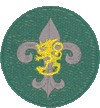

Samoajat (15-17 v.)

Lisämateriaalia:
Samoajan muistikirja ja kalenteri
Samoajaohjelma kestää kolme vuotta. Ohjelma koostuu pakollisista varusteista ja viidestä vapaavalintaisesta varustepaketista. Jokaiseen varustepakettiin sisältyy tietty määrä taskuja, jotka sisältävät aktiviteetteja. Vapaavalintaisten varustepakettien jokaisesta taskusta tulee tehdä vuosittain vähintään yksi aktiviteetti. Lisäksi samoaja tekee kaikki viisi taskua pakollisista varusteista kolmen vuoden aikana. Jokainen samoaja tekee siis vähintään 27 aktiviteettia vuodessa.
Osana partiovarustepakettia on samoajaikäisille meripartiolaisille oma tasku, jonka nimi on försti. Meripartiolaiset tekevät försti-taskun aktiviteetit kokonaisuudessaan.